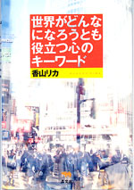

|

|
エッセイ・心理 |
||
| 世界がどんなになろうとも役立つ心のキーワード | |||
| 香山リカ | |||
|
四六 判 272頁 |
|||
| 定価1680円（本体1600円） | |||
| ISBN4-7949−6519-2 C0095 | |||
| コンプレックス、強迫神経症、パニック障害、境界例、ひきこもり……心についての不安をみんなが抱えて生きている時代。でも基本的な知識をおさえておけばだいじょうぶ。「心の時代」を象徴するさまざまなキーワードについて、心の問題の専門家・香山リカがかみくだいて解説します。世界がどんなにタイヘンでも、心の持ちようでなんとかなるさ。 |
|
|
|
|